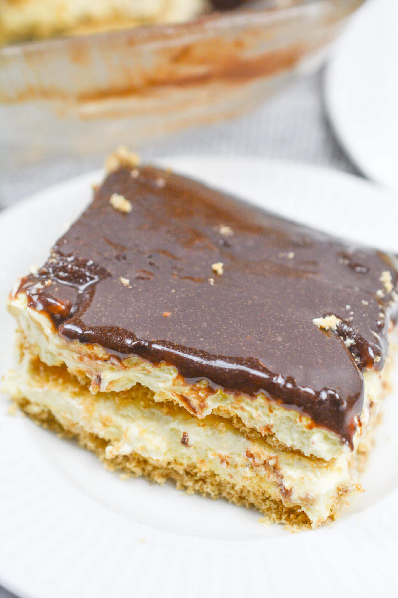

Home
Elcair Cake

Description:
Elcair cake is a savory melt in your mouth chilled type of cake, that requires no baking at all to make! Just combine the ingredients and set it to chill for a delicious no bake cake.
Ingredients required:
- 2 boxes of french vanilla pudding.
- 3 1/2 cups of milk.
- 8 oz container of cool whip.
- 1 1/2 cup confectioner sugar.
- 1/2 cup unsweetened cocoa powder.
- 3 table spoons melted butter.
- 2 tea spoons light corn syrup.
- 2 tea spoons of vanilla.
- 2 boxes of graham crackers.
Steps to make the cake:
First we're going to be making the pudding:
- Mix pudding with milk, be sure to pour the milk a little at a time.
- Then gently fold cool whip into the pudding.
Then to make the frosting mix in a seperate bowl the following ingredients:
- 1 1/2 cup of confectioner sugar
- 1/2 cup unsweetened cocoa powder
- 3 tablespoons melted butter
- 1/2 cup milk
- 2 tea spoons light corn syrup
- 2 tea spoons vanilla
Next we're going to begin layering the cake:
- In a seperate dish; layer graham crackers in bottom of the dish.
- Once the bottom of the dish is lined with graham crackers, pour in half of the pudding mix.
- Cover the pudding with another layer of graham crackers.
- Pour the rest of the pudding mix over the graham crackers.
- Cover the last layer of pudding with graham crackers.
- Once the last layer of graham crackers is on, cover with the frosting you made earlier.
After you've completed all the steps above refridgerate for a few hours, until everything sets, and enjoy!